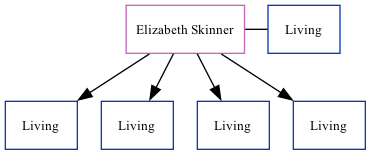

Elizabeth M Horne (née Skinner)
[ Home ] | [ Calendar ] | [ Surnames Index ] | [ Family History ]Elizabeth Skinner, the wife of Michael C Horne (the second cousin on the father's side of Nigel Horne), and married Michael (with whom she had 4 surviving children Christopher M, Andrew J, Mark Stephen and Jason Lee) in Tonbridge, Kent, England around Nov 19601.
Citations
- England & Wales, Marriage Index: 1916-2005 Online publication - Provo, UT, USA: The Generations Network, Inc., 2009.Original data - General Register Office. England and Wales Civil Registration Indexes. London, England: General Register Office. © Crown copyright. Published by permission of the Cont
Media
England & Wales marriages 1837-2008 Transcription - BMD-M-1960-4-AZ-000576-080
England & Wales marriages 1837-2008 - BMD/M/1960/4/AZ/001127/103
Family Tree
Generated by ged2site. Last updated on Nov 13, 2024